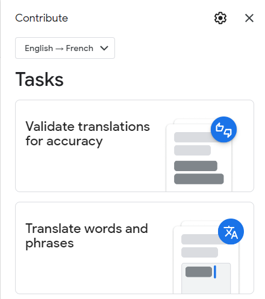
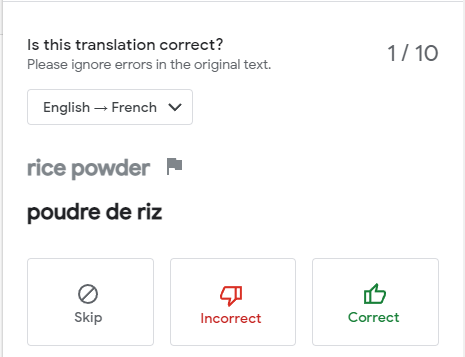
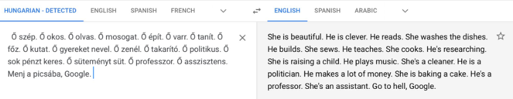
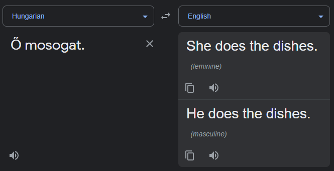
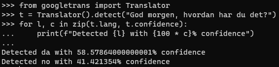
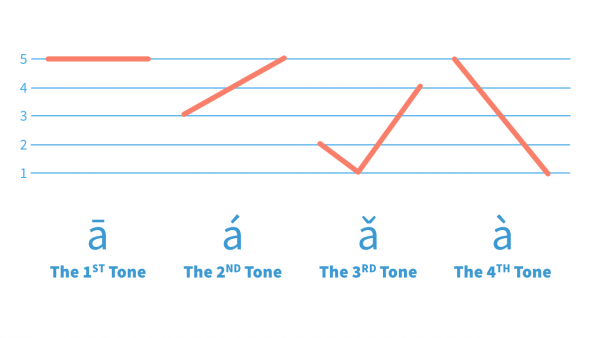

Could Machine Translation Solutions Replace Human Translators?
|
Could Machine Translation Solutions
Replace Human Translators?
An Investigation Into The History And
Future Of Machine Translation Solutions

Joshua Carl Stuart Brunton
██████████████████
Candidate No. ████
Centre No. █████
A dissertation submitted for the qualification of
AQA Level 3 Extended Project Qualification (7993)
April 2023
|
Table of Contents
Table of
Contents 1
Abstract 2
Introduction 2
Practices 3
A History Of Translation
Software 3
Word-For-Word
Translation 4
Premise & Proper
Performance 4
Issue:
Conjugations 5
Issue: Word
order 6
Issue: Word
Delimiters 6
Summary 7
Implementation of
Rules 7
Premise & Proper
Performance 7
Issue:
Exceptions 8
Issue:
Homonyms 8
Issue: Development
Restrictions 9
Summary 9
Statistical Machine Translation
(SMT) 9
Premise 9
Issue:
Inaccuracies 10
Issue: Dirty Data, Bias &
West-Centrism 11
Modern Translation
Solutions 14
An Introduction to Neural Machine Translation
(NMT) 14
Technologies Associated with Modern Machine
Translation Solutions 14
Input
Layer 14
Speech
Recognition 15
Optical Character
Recognition 15
Pre-Processing
Layer 16
Autocorrect 16
Automatic Language
Detection 16
Output
Layer 17
Text To
Speech 17
Shortcomings of Neural Machine
Translation 18
When Translation Does Not
Suffice 18
Linguistic Drift & New
Words 19
Ambiguity 19
English As The
Middle-Man 20
“Problem Exists Between Keyboard and
Chair”: Machine-Independent Problems Arising From Users’
Incompetence 22
Bad
Inputs 22
Unfamiliarity with
systems 23
The Future of Machine
Translation 25
Natural Language Processing: The Next Step In
Translation? 25
Remaining Issues With
NLP 26
Machine Learning
Issues 26
Other Computational
Issues 26
Non-Computational
Issues 27
Summary 27
Summary &
Conclusions 28
References 29
Abstract
With over half a billion netizens having used online translators[1], one cannot deny that machine
translation is a greatly important industry — but can it ever replace the need for human translators?
This paper aims to explain and discuss the history, current state, and future of machine translation, as
well as the implications arising from potential developments in the field.
Introduction
With over 7000 languages spoken in the world today[2], and with the rise of the internet, interlingual
communication has become easier than ever. In this age of globalisation, translation has become an
invaluable skill for individuals and businesses alike.
Languages, however, are notoriously
difficult and time-consuming to learn, and even more so to master. Barriers to entering translation as a
profession are often high, with most employers requiring at least a bachelor’s degree — a
qualification that can cost tens of thousands more, and takes a year longer, than other similar
qualifications.
Despite its current shortcomings, machine translation offers a quick and easy
alternative method to break the language barrier, and as such has become a widely used and relied upon
service — but can it ever become so effective as to eliminate the need for human translators?
This dissertation aims to educate on the history of machine translation, give
commentary on the current state of the field, speculate on the future of the industry, and argue as to
whether computers can — and should — eliminate the need for human translators. A tour of the
Eurasian continental area and throughout history, this paper touches on a diverse variety of languages while
explaining the evolution of machine translation solutions throughout modern history.
Iterations of machine translation algorithms, and their associated technology,
will be briefly explained, followed by examples from around the globe highlighting the limitations of these
technologies, leading down a path of algorithmic evolution culminating in the future of machine translation.
Practices
This dissertation cites sources using the APA 7th edition citation style as outlined in the Publication Manual of the American Psychological Association: 7th Edition[3].
To represent the standard pronunciation of
foreign languages, the International Phonetic Alphabet, as outlined in the Handbook
of the International Phonetic Association[4], is used when pronunciation is particularly relevant. This
is often alongside romanisations from the most widely recognised romanisation systems for languages with
non-Latin scripts. A foundational understanding of the IPA is useful, though not essential, in understanding
some aspects of this dissertation.
A History Of Translation Software
Machine translation is a field based in a much larger discipline: translation. Man
has been translating between languages for as long as international relations have existed. The act of
translation creates a bridge between people and cultures who would otherwise struggle to connect, promoting
communication and connection between foreign peoples.
Of course, in the early years of
translation, when inter-lingual communications were first established, machine translation and the computer
as a concept had not yet been invented. For this reason, translation was a rare skill, due to the
inaccessibility of language education. People lacked the ability to quickly search massive databases for
words, and to instantly connect with fellow linguists to be educated on the nature of new and complex
concepts. Should they have encountered someone who did not speak their mother tongue, the common person
almost surely would have had no way to communicate.
As time progressed, education in foreign languages became more accessible. With
developments in international relationships, the populaces of adjacent countries became more likely to study
each others’ languages. This was especially true in Europe, with a diverse variety of languages and
cultures in close proximity to one another. With such inventions as the printing press, education became yet
more accessible. Educational materials could be easily replicated and distributed to those who would be able
to afford them. Developments such as the aeroplane made international travel easier than ever before,
inevitably increasing the demand for people who could speak multiple languages. Language education was more
accessible than ever — but despite all the world’s advancements, this new age of
interconnectedness brought a new challenge: There are simply too many languages. It takes years of study and
experience to master just a single one, let alone the thousands spoken in the modern world.
Alongside this problem, modern advancements gave way to a solution: Machine
translation, or, the act of using a computer to translate between languages. With a perfect memory and high
adaptability, computers seemed an invaluable tool to facilitate interlingual communication.
Word-For-Word Translation
Premise & Proper Performance
The first translation software models were incredibly simplistic — simply
substituting a word in one language for its equivalent in another.
In a computational sense, this meant
splitting up a string of text into a list of words, translating each one, and piecing the sentence back
together. It is customary to refer to the language from which a passage is translated as the
“source” language, and the content given to the computer as the “input”. Given
these, the computer gives an “output” in the “target” language.
A visual explanation can be seen
below, translating the sentence “The dog eats” from English into French. First, the algorithm
separates the sentence into a list of words, by looking at the spaces in the sentence
“The dog eats” → [“The”, “dog”,
“eats”]
The computer then consults a dictionary — a list of words in one language and
their equivalents in another. Coincidentally, a “dictionary” is a common name for the data
structure used to store such word pairs. Each word would be translated as so:
“The” → “Le”
“dog” → “chien”
“eats” → “mange”
This list of words would then be re-constructed to form a complete sentence, with the
original order of words still retained:
[“Le”, “chien”, “mange”] → “Le chien
mange”
The computer then produces its output and correctly arrives at the following conclusion: The
English sentence “The dog eats”, translated into French, is “Le chien mange”.
On this particular occasion, the word-for-word translation algorithm has performed perfectly
and produced an accurate output — however, language is a complex system, and even sentences as simple
as the above leave room for error if one simply substitutes words.
Issue: Conjugations
“Conjugation” refers to the modification of a verb to express qualities
such as tense or mood, and/or to agree with grammatical aspects of relevant nouns (which might include
gender, number, inclusivity, purpose, and more). While not all languages practise conjugation, many European
languages make extensive use of it, to aid distinction between person, number, and tense.
In English, most conjugations in the present tense are the same, with only the 3rd person singular regularly being an outlier. Many other languages have one
or more conjugations being identical. Esperanto is a widely-spoken conlang[5] whose verbs do not conjugate for
person or number. As an example, the verb “manĝi” (“to
eat”) is always “manĝas” in the present tense. The table below shows the present
conjugations of “to eat” and “manĝi”.
|
Person
|
Number
|
Conjugation of “to eat”
|
Conjugation of “manĝi”
|
|
1st
|
Singular
|
Eat
|
Manĝas
|
|
Plural
|
|
2nd
|
Singular
|
|
Plural
|
|
3rd
|
Singular
|
Eats
|
|
Plural
|
Eat
|
Given this information, the computer knows that in translating from English into
Esperanto, “eats” must become “manĝas” — however, working in the other
direction, “manĝas” might become “eat” or “eats”.
Continuing with the previous example, the correct translation of “the dog
eats” in Esperanto is “la hundo manĝas”. In translating from English to Esperanto,
the computer will always produce the correct output — each English word in the sentence has only one
equivalent in Esperanto.
Translating from Esperanto to English, however, is more difficult: the algorithm does not
understand that the dog takes the 3rd person singular
conjugation, therefore the computer does not know which conjugation to choose and may produce the
grammatically incorrect output, “the dog eat”. Of course, this output is still comprehensible to a speaker of English, despite its clearly
ungrammatical nature. If a reader did not know the output was produced by a simple machine, they would
likely look down upon the writer for their poor grammar.
Issue: Word order
Yet more problems arise when the complexity of the input is increased even slightly,
especially when translating between more distant languages.
While many European languages use a subject-verb-object (SVO) word order, other
languages tend towards SOV (subject-object-verb) structures. One such language is Bengali (also known as
Bangla), the official national language of Bangladesh.
Consider the English sentence, “I eat rice”. This sentence can be
separated into its component words: [“I”, “eat”, “rice”]. Each word can
then be translated into Bengali: [“আমি”, “খাই”,
“ভাত”] and re-assembled into the complete sentence
“আমি খাই ভাত” ⟨ami kʰai
bʰat⟩.
This output is grammatically incorrect. The correct translation,
“আমি ভাত খাই”
⟨ami bʰat kʰai⟩, follows a different word order — word for word, it means “I rice eat”. A
simple word-for-word algorithm, however, cannot identify which word is the subject, verb, or object, and
therefore cannot properly arrange the words to produce a correct translation. While a Bengali speaker might
understand the grammatically incorrect “আমি খাই
ভাত”, it is clear that the sentence is wildly grammatically inaccurate, and failure
to follow word order in more complex sentences might lead to miscommunications.
Issue: Word Delimiters
An additional problem with the word-for-word model, prominent when translating into certain
languages, is that it relies on the computer’s ability to define a “word”. Even among
linguists, the existence and definition of “words” is a debated topic, as many languages do not
make a clear distinction between the components of their sentences[6].
In English, one might think of a word
as a relatively simple concept — perhaps defining it along the lines of “a lexical unit
separated from others of its type by spaces or punctuation”. As this generally holds true, it is
relatively straightforward for a computer to distinguish where one word in English ends and another begins:
It simply looks for a blank space. In other words, when splitting a sentence into words, the space is the
delimiter.
Not all languages, however, make clear
distinction between words. See here Article 1 of the Universal Declaration of Human Rights, translated from
its original English into Tibetan[7]:
|
All human beings are born free and equal in dignity and rights. They are
endowed with reason and conscience and should act towards one another in a spirit of
brotherhood.[8]
(29 spaces[9])
མིའི་རིགས་ཐམས་ཅད་ལ་ལ་རྒྱ་དང་ཁེ་དབང་གི་ཐད་ནས་རང་དབང་དང་འདྲ་མཉམ་གྱི་སྒོ་ནས་སྐྱེས་པ་རེད།
ཁོ་ཚོར་རྗེས་དཔག་དང་གཞུང་སེམས་ཡོད་པས།
སྤུན་ཟླའི་སྙིང་སྟོབས་ལ་བརྟེན་ནས་ཕན་ཚུན་བྱ་སྤྱོད་སྤེལ་དགོས།
(2 spaces)
|
Tibetan does not use spaces or any other character to show where one word ends and another
begins. Syllables are divided by a tsek (་), and while many
Tibetan lexical units are monosyllabic, it cannot be considered functionally identical to a space, as it
does not always divide words (as no such concept exists in the
same sense as in English). While one who understands the language could separate the sentence into different
parts, which might be considered similar to “words” (as we, the English speaker, understand
them), it is nigh-impossible for one who does not understand the language, and entirely impossible for a
simple computer program.
Summary
As can be seen, the primitive word-for-word translation algorithm does not perform particularly
well in a vast majority of cases, losing accuracy as the complexity of the inputs and the distance between
the languages increase. The problems listed above prove beyond doubt that word-for-word translation, while
occasionally acceptable for the rough translation of simple sentences, is not at all suited to accurately
translate more complex and intricate texts. This sparked the birth of the next major era of machine
translation, with the implementation of rules.
Implementation of Rules
Premise & Proper Performance
To combat the issue of translation algorithms producing grammatically incorrect
outputs, more advanced algorithms were developed, implementing grammatical rules. To compare a simple
word-for-word algorithm against an algorithm with rules, an example is provided from Portuguese.
The English sentence “He is tall” is correctly translated into
Portuguese as “Ele é alto”. A word-for-word algorithm may produce this output by chance
— though it may also output “Ele é alta”, as it has no insight as to which form of
the adjective (alto/alta) to use.
A rules-based algorithm would be aware that the use of the masculine pronoun
“ele” must always go with the masculine adjective “alto”. Similarly, if the feminine
pronoun “ela” was used, the feminine adjective “alta” would be selected instead. The
implementation of rules mitigates many issues regarding varying forms of words in target languages, solving
many problems regarding conjugation and agreement prevalent in word-for-word algorithms.
Rules-based algorithms are also particularly effective when word order differs. As is the
case with most romance languages, Portuguese puts its adjectives after its nouns in most cases. An example
would be the sentence “the red apple”. Assuming that, by chance, the correct article and
adjective forms are chosen, substituting each individual word gives “A
vermelha maçã”, which is still grammatically incorrect. A
rules-based algorithm is aware of the difference in word order, and as such can produce the grammatically
correct output “A maçã vermelha”.
Rules-based algorithms tackle many of the downfalls of word-for-word algorithms
when it comes to differences in grammar between source and target languages.
Issue: Exceptions
Despite being a significant improvement upon its predecessor, the rules-based
algorithm type was far from perfect. A major issue is exceptions.
In some cases, it is possible to code for these
exceptions — but not always. In Spanish, adjectives normally come after nouns. Some patterns for
exception are simple — for example, adjectives precede nouns if used in an exclamatory manner after
“Qué” (e.g. “Qué hermoso pájaro!” meaning “what a
beautiful bird!”), or when discussing quantity. In contrast, Spanish adjectives may also be placed
before the noun when they describe an “inherent or assumed quality”, or if they reflect a
“subjective characteristic or opinion”[10]. As the translation algorithm lacks the awareness to
know when adjectives meet these criteria, it is nigh-impossible to determine when is appropriate to apply
this exception.
Issue: Homonyms
The rule-based algorithm also struggles to perform accurately in the presence of
homonyms: Different words with a single spelling and/or pronunciation. Homonyms may share a common spelling
in the source language, but different spellings in the target language.
A common homonym in English is the word “bow” — when pronounced
/bəʊ/ (rhyming with “show”), it may mean:
- Bow (noun): a knot tied with two loops and two loose ends
[...]
- Bow (noun): a weapon for shooting arrows [...]
- Bow (noun): a long, partially curved rod with horsehair
stretched along its length [...]
However, the word can also be read as /baʊ/ (rhyming with “cow”), to
mean:
- Bow (verb): Bend the head or upper part of the body [...]
- Bow (noun): The forward part of a pleasure craft[11]
And at least 7 more interpretations[12]. To demonstrate the problems arising from the existence
of homonyms, we will focus on only two definitions: That of a weapon, and that of a decorative knot.
In Italian, “bow” (/bəʊ/,
weapon) is “un arco”, and is usually used with the verb “tirare”, meaning to shoot
or fire. “Bow” (/baʊ/, decorative knot) is “un fiocco”, and is often used with “fare”, meaning to do or make.
One might assume that the rules-based
algorithm might detect the verb used in relation to the noun, and therefore select the appropriate
translation of the noun. This, however, is usually not the case, as programmers are unlikely to consider
such cases.
As a result, the computer may produce incorrect
and nonsensical outputs such as “tirare un
fiocco” — to fire a decorative bow. As the words in Italian are
completely different, an Italian speaker would likely struggle to understand the intended meaning of the
sentence.
Issue: Development Restrictions
Grammatical complexity is not the only hurdle faced in the development of rules-based
algorithms. When developing software, two major concerns are the time taken to develop, and the final
“size” of the project[13].
With thousands of languages in the world, most of which have countless
exceptions, it is impractical (if not impossible) to code for every exception for which software can
account. It simply takes too much time, and, if commissioned by a company, would be too expensive to fund
development.
Summary
For some time, rules-based translation algorithms were limited by the knowledge,
skill, and investment of those who programmed them, and as such, the industry had hit another standstill
— that is, until developments in the field of computer science allowed for the rise of
statistics-based translation solutions.
Statistical Machine Translation (SMT)
Premise
Statistical Machine Translation, abbreviated as SMT, “deals with automatically mapping
sentences in one human language [...] into another”[14]. This differs from previous iterations of the
translation algorithm in one key way: It maps complete sentences, as opposed to components of sentences.
In simple terms, this means that the
computer is given vast amounts of reference material translated between two languages. This is usually in
the form of translated books. Using a complex computational technique known as machine learning, the
computer can find one sentence in the source language, and its equivalent in the translated version. It then
learns that these sentences are roughly equivalent. With enough source material (i.e., a large enough
codex), the computer can build up a massive repository of information. Despite not understanding the content
it is processing, it “knows” that certain words and phrases in a pair of languages are generally
translated in certain ways.
When an SMT algorithm has built up
enough information, it can be used to translate. It takes the sentences in the input and produces the output
that is statistically most likely to be correct, based on the text it has “read” in the past.
This overcomes the past prominent issues of exceptions and programming time. One
of the main advantages of the SMT algorithm was that it could pick up on exceptions automatically, since it
learned from consuming source material (a technique highly recommended among the language learning
community), as opposed to simply memorising vocabulary and grammar.
Another selling point of the SMT algorithm type was its scalability. Instead of
paying a programmer to expand the capabilities of the translation solution, one could simply add to its
repository of knowledge. This meant that programmers no longer had to spend hours on end coding hundreds of
thousands of words and rules, and their employers no longer had to fork out thousands to fund such work.
Issue: Inaccuracies
As with all translation systems to date, SMT algorithms are by no means completely
accurate. In fact, as their outputs are statistically generated (as opposed to pre-programmed), those who
program these models have significantly less influence over the output.
A common way to validate outputs,
employed by such services as Google Translate (see below), is to have users submit their own data (which
helps to keep the codex updated with more modern language to compensate for linguistic drift), and review
outputs provided by the service should they already speak the source and target language with some degree of
competency.
An issue arises when bad actors give
inaccurate information to SMT models — providing incorrect translations, or marking accurate
translations as incorrect and vice versa. This is referred to as “dirty data”.

Issue: Dirty Data, Bias & West-Centrism
Dirty Data is a common issue faced by machine learning models and specialists. This
term refers to when a machine learning model is fed inaccurate data.
Dirty data comes in many types. One of the most
clearly damaging types is incorrect data. Consider those who do not know, or do not care to acknowledge, the
difference between “their” (pronoun), “there” (multifunctional), and
“they’re” (contraction of pronoun and verb). As these words are homophones, pronounced
/ðeə(r)/, many people opt to use just one form in writing. While an English speaker can recognise
the intended meaning from the incorrect spelling, the existence of language privilege[15] means that one might be looked down
upon for failing to use the appropriate spelling. Allowing the use of the incorrect form of
/ðeə(r)/ to appear in source material can lead to the translation algorithm using the incorrect
spelling in an output, reducing accuracy.
Another type of dirty data is outdated data. In
terms of translation algorithms, this can primarily refer to older uses of language. As an example, if a
translation algorithm was trained only on the works of Shakespeare, its outputs would sound much like
Shakespeare, appearing unnatural to the modern speaker of English. Of course, this is an extreme example,
however linguistic change can happen over relatively short periods of time. Works from the 20th century, especially the earlier half, generally used terms for
minorities, especially people of African or Asian descent and LGBTQ+ people, that are no longer polite or
acceptable to use due to their history. This can lead to problems in the political correctness of the
outputs, and therefore reduce the desirability of the translation algorithms. As mentioned above, this can
be combated by constantly training with new source material (as well as discarding or limiting the influence
of older materials).
Translation algorithms based on source material
can also become subject to biases present in the source material. In March of 2021, a Twitter user by the
name of Dora Vargha (@DoraVargha) shared a tweet claiming, “Hungarian is a gender-neutral language, it
has no gendered pronouns, so Google Translate automatically chooses the gender for you. Here is how everyday
sexism is constantly encoded in 2021”[16]. Attached to their tweet is the following screenshot to serve as
evidence[17].

As can be seen, Hungarian does not
distinguish between social gender with pronouns as English does. Instead, it uses a single gender-neutral
pronoun, “ő”, to let the reader or listener know that the speaker is referring to a person.
After this information came to light,
software engineers took the approach of re-training on smaller data sets: “Instead of [editing the
entire source codex], we decided to retrain existing translation systems with targeted lessons. When we
spotted a bias in existing tools, we decided to retrain them on new, smaller data sets – a bit like an
afternoon of gender-sensitivity training at work”.
Though the validity of “they” as a
gender-neutral singular third person pronoun in English is widely disputed by linguists and non-linguists
alike (with speakers of British English being more likely to accept its use[18]), using it as such here can create ambiguity — in many
translations, “they” may be used in a singular or plural sense. Garner’s Modern American
Usage (2nd edition) recommends caution while using the singular
“they”, stating, “where noun-pronoun disagreement can be avoided, avoid
it”[19]. Google Translate now specifies
sentences referring to a singular person of ambiguous gender by
providing two translations — one using masculine terms and one using feminine — and reserves
“they” exclusively for plural groups, as demonstrated in the below image.
The issue of bias goes far beyond
gender stereotypes — bias can affect translation in many forms. It can be especially prominent when
generating translations based on limited data sets — for example, when two languages have little
pre-existing material translated between them, they are often trained on a version of the Christian bible,
which has been translated into most languages, and therefore the model becomes subject to its biases. Bias
can affect the quality of translation, as well as (potentially incorrectly) implying opinions held by the
person who produced the input or a company supplying the translation solution.

Modern Translation Solutions
Due to modern translation solutions being the first solutions with adequate quality
for public use, many people are most familiar with them. The most well-known services today include Google
Translate, Bing Translate, and DeepL.
Modern translation solutions do not just consist
of text inputs and outputs — the translation model itself works in tandem with other components to
adapt inputs and outputs to and from a variety of media.
An Introduction to Neural Machine Translation (NMT)
Neural Machine Translation, or NMT, is the core concept behind the algorithms seen in
modern translation services such as DeepL and Google Translate. One of the primary benefits of NMT is its
ability to train directly on source language and target language pair texts, whereas SMT requires more
complex inputs.
After training, the NMT model takes
an input and encodes it into “vectors” — a machine learning term for a representation of
the input called a “context” — a digital summary of the input that makes sense only to the
algorithm. The model then decodes this context into the target language. It is important to note that no
actual understanding or simulation of understanding takes place in NMT.
This is, of course, a gross
oversimplification of events; there are many nuances and modifications to this fundamental NMT model that
increase the quality of outputs.
Technologies Associated with Modern Machine Translation
Solutions
Machine translation solutions are often not solely composed of just a machine
translation algorithm, but other AI-driven tools to aid input and output. These include speech recognition
and optical character (handwriting) recognition for input, and text-to-speech for outputs. It is worth
noting that they suffer many of the same downfalls as translation algorithms, and as such, the more layers
are involved before and after machine translation, the higher the margin for error. A truly perfect machine
translation algorithm would require perfect input every time, and perfect conversion of outputs into various
media if applicable.
In order to match the accuracy of a
human translator, a machine translation solution would need to match its human counterpart’s capacity
not only to translate computerised text between languages, but also to interpret and mimic other forms and
media of communication.
Input Layer
Tools applied in the input layer aid with changing an input from its original medium
to the input taken by the machine translation algorithm (a string of text).
Speech Recognition
Speech recognition deals with taking audio input and outputting text based on the
spoken language in the audio sample.
Speech recognition algorithms can easily fail
when speakers fail to distinguish sounds or words. Consider the following examples of the Korean language:
쓸데없는 ⟨sseuldeeomneun⟩[20] vs. 쓸 데 없는
⟨sseul de eomneun⟩. 쓸데없는 means “useless”,
“unnecessary”, or “needless”, while 쓸 데 없는 means
“no way to use” or “no value”. In other words, where
쓸데없는 might refer to something undesirable due to lack of uses, 쓸 데
없는 might refer to something that would be hard to sell.
These two adjectival phrases are
phonetically identical. If a speaker did not pause for significant enough lengths to distinguish between the
two, a speech recognition algorithm would stand a significant chance to choose the wrong one. Even if given
some context, the similar meanings make it especially hard to distinguish in this case. As can be seen here,
even languages with highly phonetic scripts such as Korean can bring challenges when attempting to
transcribe without true understanding.
Many languages have similar-sounding
words and phrases, and all have a variety of accents and speakers, making it extremely difficult to train
accurate speech recognition algorithms. If a speech recognition algorithm produces a bad output which is
passed onto a translation algorithm, the translation may not reflect the speaker’s intention.
Optical Character Recognition
Optical Character Recognition takes a raster image as an input and outputs the text
character it is statistically most likely to represent.
Optical Character Recognition
algorithms are trained upon pairs of images and their equivalent text characters — for example, a
drawing of the Arabic numeral “zero” would be labelled as the Unicode symbol 0 (U+0000).
To process data, OCR algorithms
typically increase the contrast of their inputs, separate them into what is most likely to be individual
characters, then produce their best guess as to the Unicode character each glyph represents, before finally
reconstructing the data into a string as the output.
A common issue arising in OCR is similar glyphs
— for example, the Arabic numeral 0 looks similar to the 15th letter of the English alphabet “o” or “O”, the
Cyrillic[21] letter
“Фф” /f(j)/, and other glyphs in other scripts
and styles. Some OCR algorithms overcome this by inferring context — for example, a circular glyph
surrounded by spaces and/or punctuation is more likely to be the numeral 0 than the letter O, and it is
unlikely that said glyph would represent a Cyrillic letter if the surrounding characters were a part of the
Latin alphabet. Despite this, the issue remains prominent in languages with extremely similar characters,
and those which may be used in similar circumstances, such as the Latin script’s hyphen
“-” and em-dash “—”. Often, context is not enough of a clue, though the
distinction between glyphs can be important if, for example, the output is to be processed by a computer
algorithm.
Pre-Processing Layer
Tools applied in the pre-processing layer may not always take input directly from the
user, but are instead used to prepare the input or give additional context to the machine translation
algorithm itself.
Autocorrect
Autocorrect deals with automatically adjusting text to fix typographical errors (or
“typos”). It is primarily present on mobile devices, which typically have smaller keyboards
where it is easier to misclick a key, but is also implemented on some larger devices.
Autocorrect, while often useful to
aid with spelling and catch common errors, can malfunction and change the meaning of a sentence. As an
example, it is generally more common to begin a sentence with “we’ll” (a contraction of
“we will”), than it is to begin a sentence with “well” (the interjection), therefore
some autocorrect systems will automatically chance “well” to “we’ll” at the
beginning of a sentence. This can be overcome by considering context, especially that added later on —
for example, “well” followed by a verb might be changed to “we’ll”, but if the
word “then” is placed at the end of the sentence, it might be changed back to “well”
— though, of course, as with a larger overarching problem in translation, this solution cannot be
perfect without a true understanding of the content of the sentence.
Autocorrect can also attempt to
“correct” existing words that are not in its vocabulary. A common example appears when using
vulgar language in English: Due to the adjacency of “D” and “F” on the standard
English Qwerty keyboard, a common obscenity is often corrected to “duck”. This happens
frequently with new words, foreign loan words, and people’s names.
Automatic Language Detection
Automatic language detection is the process of taking a text input and comparing it
to examples of various languages to determine the language in which it is written.
As with most applications of machine learning discussed
in this paper, automatic language detection performs far more accurately when its inputs are longer. In this
case, it is because longer inputs are more differentiated.
Norwegian and Danish are considered to be
largely mutually intelligible languages as they both derive from the common Dano-Norwegian literary language
which existed until the turn of the twentieth century[22]. In many cases, short examples of the languages are
indistinguishable. As an example, the greeting “Good morning, how are you?” can be translated
both into Norwegian and Danish as “God morgen, hvordan har du det?”. As such, an algorithm, or
even a person, would be unable to say for certain if an instance of such a greeting was written by a speaker
of Norwegian or Danish.
See below an example of Google Translate’s
Ajax API wrapper for Python[23], googletrans[24], at work. The shown script asks a machine learning
model to predict the language of our above example. As can be seen, the model is not overwhelmingly
confident in identifying the input as either Danish or Norwegian.

The above is an extreme example, but
this can happen to more dissimilar pairs of languages, especially with smaller inputs. If an automatic
language detection model misidentifies a language and begins to translate from or to the wrong language, it
can cause confusion, and ultimately reduce the quality of the solution in which the model is applied.
Output Layer
Text To Speech
Text-to-speech algorithms take text input and produce audio output using an AI-generated voice.
Many digital assistants, such as Google’s Assistant[25] and Apple’s Siri[26], use text-to-speech technology for their
outputs. TTS is an especially useful service for promoting accessibility for visually impaired people.
TTS algorithms do face some struggles
— primarily, homographs. Homographs are sets of words with identical spellings, but differing
meanings, regardless of whether or not their pronunciations are different. If a pair of words are
homographs, but not homophones — in other words, if they are spelt identically, but sound distinct
— a TTS algorithm can struggle to select the correct pronunciation without some level of understanding
of the context.
TTS algorithms are also likely to mispronounce
words when contextual changes are introduced. Cantonese is a pictographic language, similar to the more
widely known Mandarin Chinese, that makes use of tones. When two Cantonese pictograms are used together to
create a compound word, the tones in the word may change. As an example, the characters 角
⟨gok3⟩ /kɔːk̚33/[27] and 落 ⟨lok6⟩
/lɔːk̚22/ can combine to form the word 角落
⟨gok3lok1⟩ /kɔːk̚55.
lɔːk̚22/. Here, the pronunciation of 落 has
changed from ⟨lok6⟩, with a flat low-mid tone, to ⟨lok1⟩, with a flat high tone.
The rule applied here is rather loose: “If the second character in a two-syllable compound word is a
low tone, it will typically be uplifted to one of the higher tones, either tone 1 or 2”[28]. Cantonese also has several other
contextual tonal changes relying on loosely-enforced rules. Using the incorrect tones in Cantonese can
significantly alter the meaning of a sentence, meaning that correct tonal pronunciation is important. For
this reason, TTS algorithms often fall short in languages with more complex phonetic systems.
Shortcomings of Neural Machine Translation
Modern translation algorithms themselves also have their downfalls — primarily
due to the inability of the models to truly comprehend the language they are translating, as well as wider
limitations faced by all machine learning models due to lack of appropriate training data.
When Translation Does Not Suffice
While translation is fundamentally a method of changing the way in which information
is encoded, it can be more than that. Language can be used for more than conveying information.
Consider the following joke:
“What’s Michael Jackson’s favourite colour?”, “Blue!”. This joke is not
considered funny as it relies on a feature of the Japanese language to work. The joke in Japanese reads,
”マイクル・ジャクソンの好きな色は何ですか？”,
“青！”. The punchline relies on the fact that “青” is pronounced
“/’æ. ɒ/”, a reference to Michael Jackson’s famous dance to James
Brown’s song “I feel good”, which begins with an exclamatory “Ao!”.
Consider also Homer’s classical Greek — some modern linguists propose that his
“wine-dark sea”[29] (οἶνοψ πόντος[30]) was a result of his language, and therefore his mind, lacking the
concept of “blue” as we know it[31],[32]. Translating simply
“blue” into Homeric Greek may not be possible. Translating the reverse — a representation
of the category in which our “blue” falls — into English risks creating such confusion as
has struck many readers of The Odyssey trying to
understand how the sea became the colour of wine. Some modern translators include footnotes or other
disclaimers giving possible explanations as to Homer’s choice of words.
The above examples are just two of
many occasions on which a simple translation does not suffice, and where further explanation might be
necessary. Others include proverbs (especially in more “poetic” languages, such as Mandarin,
which makes extensive use of proverbs that cannot be directly translated), as well as words and phrases with
no appropriate direct translation (usually, but not always, nouns unique to cultures, which are often
localised or transliterated).
Linguistic Drift & New Words
As modern translation software is trained upon texts that have been translated
between languages — mostly works of literature — they can have trouble keeping up with
relatively modern uses of language and newly developed words.
As an example, consider the English word
“yeet”, which was added to the Merriam-Webster dictionary in September 2022[33]. “Yeet” is a verb and interjection
meaning to throw, especially with force, apathy for where the object will land, and a connotation of
“good riddance”. Example usages include, “She yeeted[34] the basketball into the hoop”, and,
“She yelled ‘yeet!’ as she threw the ball”.
The term was popularised by a popular
video[35] posted to the now-defunct social media website
Vine[36] in 2014 and frequently re-shared on sites such
as YouTube and later TikTok, though its true origin is unclear. It
became a popular saying among young people and seems to have entered the general vocabulary of teens and
some young adults.
Despite its widespread use today,
many translation algorithms will not even attempt to approximate “yeet”, simply because they do
not recognise it as a word. For this reason, it is important to keep translation algorithms updated with
modern vocabulary, including slang — a difficult and rarely performed task.
Ambiguity
While neural machine translation is undeniably an amazingly effective solution, it is
not perfect. Its most prominent issue is that, like its predecessors, it lacks a true understanding of the
translations it is producing. Such algorithms, by their nature, change parts of their outputs based on parts
of the input that are not directly tied to the section in question, but true understanding also requires an
awareness of the situation in which the input originated and/or where the output is to be used.
Many Indic languages can be traced back to a
common ancestor language known as Sanskrit. Sanskrit is a notoriously vocabulary-dense language due to its
unorthodox method of coining new words[37].
As an example, Sanskrit has over 70 known words to represent water[38], including जल ⟨jala⟩,
तोज ⟨toja⟩, and पानीय ⟨pAn.ya⟩.
Each of these has a different connotation — for example, जल simply means
“water”, but पानीय might also refer to any beverage, as an
adjective as “drinkable” or “intoxicated by alcohol”, and even take on seemingly
unrelated meanings such as “cherished”[39].
While NMT algorithms can make
assumptions and deductions based on the data it has seen in the past, it still lacks the element of context.
With the many potential meanings of पानीय, if used ambiguously, (e.g. as
मम पानीय अस्ति ⟨mama pAnIya
asti⟩, which might mean “I have water [to drink]” or “I have a beverage”), an
NMT algorithm may understand all possible meanings of the word, but lacks the proper context to select the
correct translation.
While Sanskrit demonstrates this
particularly well, due to its relatively definite nature contrasting with the less-definite nature of
English creating immense ambiguity, this issue exists between all languages, as words often do not have
one-to-one translations.
English As The Middle-Man
An issue present in all modern forms of machine translation is a lack of available
data between any given pair of languages. The world is dominated by just a few large languages. Most
material of perceived importance is translated into one or more of the world’s major languages —
usually English, Mandarin, or Spanish. As translation is a lengthy and expensive process, it is impractical
to translate into and between obscure languages. As such, comparatively little data exists to train SMT
algorithms to translate between less-spoken languages.
A common way to circumvent this issue
is to use a “middle-man” language — instead of translating directly from a source language
to a target language, translation happens from the source language to the middle-man, then from the
middle-man into the target language. English is the most common choice for a middle-man, not only because it
is one of the most widely spoken languages worldwide and is the primary language of a majority of countries
spearheading machine translation, but also because English has a high number of translated works in common
with the vast majority of languages.
The use of a middle-man language does
have some drawbacks: not only does translating twice significantly increase the chance that translation
errors might occur, but the output may lose some grammatically encoded information, due to the possibility
that the source and target languages may share a feature that English lacks.
Macedonian and Lithuanian are less commonly
spoken languages, with 1.5 and 2.3 million speakers respectively[40],[41]. Both have adjectives which change forms based on the grammatical
or social gender of the noun to which they refer[42], as is the case in a majority of languages spoken in
Europe.
While a male speaker of Macedonian might say “Јас
сум убав” (Jas sum ubav) to mean “I am pretty”,
a female speaker would instead say “Јас сум
убава” (Jas sum ubava), to agree with their gender. A similar difference
exists in Lithuanian: “Aš gražus” for male speakers, and “Aš
graži” for female speakers.
These sentences do not only express the information that the speaker is claiming
to be pretty — the speaker's gender is also encoded into the sentence via the form of the words
spoken. Translating directly between the two languages retains this information, however, direct translation
may not be possible if there is not significant training material translated between the two languages.
To enable translation between
Macedonian and Lithuanian or vice versa, English may be used as a middleman. While the primary information
in the sentence (that the speaker is claiming to be pretty) is retained, English adjectives do not change to
compensate for gender, and therefore the gender of the speaker is lost. Many translation algorithms will
assume to use the male form, since in many languages, the male form is the assumed default. To give a visual
example:
Direct Translation
Јас сум убава → Aš graži
(Feminine gender remains encoded)
English as a proxy
Јас сум убава → I am pretty → Aš gražus
(Gender is lost & incorrectly presumed)
As can be seen here, using a middle-man language can cause grammatically encoded
information to be lost or corrupted, limiting the accuracy of translation.
“Problem Exists Between Keyboard and Chair”:
Machine-Independent Problems Arising From Users’ Incompetence
“Problem exists between keyboard and chair” (PEBKAC) is a term used by computer
technicians and IT professionals to describe a user error[43] — that is, an error that is produced as a
result of the user’s ignorant misuse of a program, as opposed to a fault in the program itself.
Even a perfect computer program will
fail so long as its users have any say in its input, because users are always capable of giving “bad
inputs”. Users are also liable to misinterpret information outputted by a computer program. As such,
the issues discussed here apply to all machine translation solutions, present and future.
Bad Inputs
Speakers of languages tend to make mistakes or use alternative methods of
communication that can create ambiguity. Consider the English homophones pronounced /jↄ:r/ —
“your”, second person possessive pronoun & adjective, and “you’re”,
contraction of “you are”. In writing, many people will always use “your”, as they
may not know the difference, while in casual contexts, one may use “your” to mean
“you’re”, for simplicity, or because it is easier to type (indeed, one may also choose to
substitute one or both spellings of /jↄ:r/ for “ur”).
To a proficient reader of English,
the meaning can be inferred via context, even if it may paint the author in a negative light if used
incorrectly in formal context, but when given as input to a translation algorithm, problems may arise.
Consider languages where the second
person possessive pronoun (“your”) and the second person subjective with appropriate conjugation
of “to be” (“you’re”) are phonetically distinct — for example, Irish.
In Irish, “you” is
“tá” (with “you’re” being “tá tú”), and
“your” is “do”. The grammatically correct example sentence “You’re
sleeping in your bed” uses both forms of /jↄ:r/. Translated correctly into Irish, it reads
“Tá tú i do chodladh i do leaba”
(literally, “you are in your sleep in your bed”).
If the wrong form of /jↄ:r/ is used in the
source, the output may also be incorrect (though they are arguably equally incorrect, the mistake is much
more prominent in Irish). If the translation solution cannot compensate for such errors, giving the input
“Your sleeping in you’re bed” may produce such
outputs as “Do codladh i tá tú leaba”, a translation much more likely to spark
confusion than the original.
In such cases, the translation
algorithm is technically at no fault — in fact, it performed perfectly. The error arises from the user
providing bad input. Though the user is to blame, one might argue that the translator has failed by turning
a comprehensible input into a potentially incomprehensible output. Though for “minor” errors
such as this one, services such as autocorrect can usually account for the error, more clearly incorrect
inputs still pose a significant risk to cause algorithms to produce a translation that fails to carry the
speaker’s message.
Unfamiliarity with systems
Even a perfectly accurate translation system would not be perfect — by no fault
of its own, but by fault of the user. As an example, shown below is an example of a French speaker
mispronouncing a romanisation of Mandarin.
Recall “transliteration”:
The conversion of a series of glyphs representing sound from one system to another. The official
romanisation system for standard Mandarin Chinese is 漢語拼音
⟨hànyǔ pīnyīn⟩. 
Mandarin is a tonal language, meaning that the
interpretation of a word changes based on the pitch and inflexion with which it is spoken. The tone of a
syllable in hànyǎ pīnyīn is denoted by a diacritical mark placed above a vowel. There
are 4 tones: The 1st, ⟨ā⟩, a flat high tone; the
2nd, ⟨á⟩, a slightly rising tone; the
3rd, ⟨ǎ⟩, a falling then rising tone; and the
4th, ⟨à⟩, a sharply falling tone[44].
Let us take 人, the Mandarin word meaning
“person”, as an example. 人 is shown as ⟨rén⟩ /ʐ[b]ən35/, with the vowel
similar to the one towards the end of the English word “teacher”. One who is familiar with the
pīnyīn system, or with the mechanics of spoken Mandarin in general, would know that the
“é” in “rén” indicates that 人 is pronounced in this way —
however, not everyone is familiar with this system.
In French, “é”
denotes an /eɪ/ sound, like the diphthong in the English word “wait”. The accent gives no
indication as to the common tone or stress pattern of the word. A speaker of French may therefore interpret
the pinyin “rén” to be pronounced as /reɪn/, (like the English “rain”),
ignoring pitch accent.
In context, a Chinese speaker would be able to
easily distinguish that rén refers to 人, meaning person, as opposed to such phonetically and
tonally identical characters such as 任
⟨rén⟩, a Chinese surname. However, if
mispronounced, a speaker may struggle or fail to identify the meaning, becoming confused or misinterpreting
the sentence.
Pronounced as “rèn” or
/ʐ[b]ən51/,
the syllable can mean 认 (to recognise) or 任 (to allow). Further mispronunciations of tone may
result in mistaking the butchered “人” for any number of other syllabic characters which
are phonetically identical but tonally distinct.
This can happen on massive scales when one
phonetic syllable has many meanings based on tone as well as context. Chí
/ʈʂʰi:45/ may refer to any of the following characters:
持 (hold), 弛 (loose), 驰 (fast), 侈 (luxurious), or 池 (pond). Changing the
tone of the syllable, Chì (/ʈʂʰi:51/) might mean
赤 (red), 炽 (burning hot), 斥 (scold), or 翅 (wing). Also pronounced
/ʈʂʰi:/ (with a variety of tones) are: 齿, 尺, 耻, 吃, 痴, and
more[45]. This happens to such an extent that
Chinese-American linguist, scholar, and poet 趙元任 Zhào Yuánrèn
composed a poem in classical Chinese, 施氏食獅史 (or “The Lion-Eating
Poet in the Stone Den”). Consisting of 93 characters, every character of the poem is read as
“shi”[46].
If a French speaker translates into Mandarin,
reads “é” aloud as /eɪ/ as opposed to /ə35/, and as a result, is misinterpreted, an issue has arisen by no fault of the service, but by the
lack of knowledge of the user.
Machine translation services cannot
be completely accountable for errors unless the output is used directly (in this case, if rén was
pronounced using text-to-speech as opposed to being read aloud by the user), as the more involvement the end
user has, the higher the opportunity for human error.
The Future of Machine Translation
Due to the limitations of modern translation software, the difficulties in training and hiring
human translations, and the ever-increasing demand for translation services, machine translation solutions
are constantly being improved. Due to NMT’s inability to comprehend context, the obvious next step in
the field, which is already in development, is Natural Language Processing: teaching a computer to think
about speech like a human.
Natural Language Processing: The Next Step In Translation?
Natural Language Processing — or NLP — refers to a machine learning
algorithm that can process and understand language in the truest sense, as a human can.
Modern technology is already somewhat able to
accomplish natural language processing. Services such as ChatGPT[47] use natural language processing[48]. They can understand several major
languages and translate between them with some degree of accuracy, as well as performing with limited
accuracy in translation involving less represented languages. Whether or not the GPT-3 model (and its
in-development successor, GPT-4) can truly understand language in the way a human does is debatable, but it
is undeniable that it can produce near-perfect imitations of human communication, including translations
between the world’s major languages.
Natural Language Processing
translation models offer a series of improvements upon statistical machine translation. Their more
“true” understanding of language allows them to translate between any pair of languages for
which they have enough data to comprehend.
This gives NLP algorithms many advantages over the previous SMT models. Firstly,
depending on how the solution is built, the algorithm may be able to ask questions to obtain more necessary
context and therefore avoid ambiguity.
If connected to the internet, an NLP algorithm may be able to keep up with the
most modern forms of communication, including new words, turns of phrase, and abbreviations.
NLP is generally capable of working around typos with a sort of built-in
autocorrect capability that is much more contextually aware. As a part of the model, it also removes much of
the need to invest in the development and integration of external autocorrect algorithms for the solution.
Finally, due to its more human-like understanding of language, there is no longer a need for
middle-man languages, and therefore grammatically encoded data is less likely to be lost. It can adapt its
translations and add clarification where necessary and, if constantly consuming new data, keep up with
linguistic drift, even prioritising newer data.
Remaining Issues With NLP
Despite its advanced structure and features, natural language processing is not the
be-all and end-all of translation. Many issues both to do with machine learning and translation in general
persist through this advancement.
Machine Learning Issues
Firstly, it is important to remember that NLP algorithms still fall within the scope
of machine learning, and are therefore still subject to dirty data and bias. If an NLP algorithm is trained
upon linguistically non-standard data, it may begin to produce linguistically non-standard outputs.
Netizens often simplify spellings and
grammar and omit punctuation from the language they produce online for the sake of simplicity. If an NLP
algorithm does not have the capacity to understand that this is not commonly accepted as
“correct” language, it may start to make spelling and grammatical errors in its output.
Furthermore, many netizens have begun to use
obscure synonyms or alternative terminology for sensitive topics to avoid censorship (such as
“expire” to mean “die”[49], or “mascara” as a metaphor for relationships, sexual
experiences, and sexual assault[50]). As some of this language can be niche, and most is not considered proper language, users of
translation services may not think it desirable, and therefore NLP algorithms may be considered low quality
if they cannot avoid using such language.
Finally, as machine learning
algorithms, NLP algorithms require vast amounts of data upon which to train — the less data on which
such an algorithm is trained, the lower the quality of its translations will be. As many less-spoken
languages (especially indigenous and minority languages) have little to no available content on which to
train, NLP algorithms cannot translate them remotely competently, and therefore human translators remain
essential for such languages.
Other Computational Issues
Machine-related issues independent of NLP algorithms also play a role in NLP
translation solutions. Though NLP can generally take care of autocorrect and automatic language detection,
other input and output tools may still give bad outputs. In order to create a solution that can match a
human translator in quality, not only must it have equal capabilities in translating text between languages
— its associated input and output tools must also be of similar quality to that of a human.
Another general computational issue with NLP is
the sheer processing power and storage space it requires. The codices used to train an NLP algorithm would
likely require one or more dedicated storage servers to host, and the resource-intensive translation
processes can be taxing to run on home computers, as well as having a significant impact on electricity
bills. The aforementioned ChatGPT service (running the OpenAI GPT-3 model at the time of writing) reportedly
costs upwards of USD $100,000 daily to run[51].
Non-Computational Issues
A problem generally unrelated to machine translation, but still prevalent in the
application of NMT algorithms, is retranslation. The algorithm may not always be asked to translate directly
— a text may be translated by one person, then again by another, and again by another, each time
potentially warping the meaning and/or losing grammatically encoded information.
Finally, the “PEBCAK”
issue also remains: The user of an NLP solution may still use or pronounce an output incorrectly if they do
not have adequate knowledge of the target language. The scale of modern computer systems struggles to
support such resource-intensive activity, therefore, further developments in storage space and processors
are also necessary to bring NLP translation into the hands of the consumer. This might be accomplished by
recent developments in the field of quantum computing, a theoretical advanced method of computing allowing
parallel processing and by bringing the storage capacity of data centres and the processing power of
supercomputers into home-quality processors.
Summary
Though NLP is without a doubt a major leap forward in the field of machine translation (as well
as artificial intelligence in general), overall, a machine translation service is only as
strong as its weakest component. This means that major developments in the quality of not just translation algorithms, but also speech
recognition, OCR, and text-to-speech algorithms, are necessary to significantly improve the overall quality
of machine translation services.
Summary & Conclusions
Despite boasting many superiorities over the current “status quo” NMT
algorithms, newly developed NLP translation solutions still face a number of significant barriers which
prevent their quality from matching that of the human translator, and as such, the field of machine
translation has a long way to go before human translators need worry for their jobs.
NLP algorithms are held back by the
relatively low quality of other technologies applied in translation solutions, as well as general issues
faced by all machine learning models, and the limitations of the modern computer. Furthermore, a comparative
lack of training data in less widely-used languages limits the number of languages which can be effectively
processed by NLP models, ensuring that human translators remain essential for such applications, at least
until a significant enough amount of content has been produced in such uncommon languages.
Furthermore, there is always a human
component to machine translation, as humans produce the input for the algorithms and often act upon the
output. For this reason, even a theoretical perfect machine translator would not truly be perfect, for the
risk that users may produce bad inputs and/or misuse outputs.
In conclusion, though recent developments in AI
and computer hardware have paved the way for a large jump forward in the quality of machine translation
solutions, there are still significant developments to be made within the fields of machine learning,
linguistics, and archivism before machine translation solutions can match the quality of human translators,
and even then, it is important that users of such solutions have a degree of competence in the source and
target languages in order to ensure clean inputs and the appropriate use of outputs. Furthermore, a lack of
sufficient training data in all but the most popular languages ensures that human translators will be
required for years to come, even if only to provide training data.
References
American Psychological Association. (2019). Publication Manual of the
American Psychological Association: The Official Guide to APA Style (American
Psychological Association, Ed.). American Psychological Association.
ATLAS - Lithuanian: More about Lithuanian. (n.d.). ATLAS -
Lithuanian: More about Lithuanian. Retrieved February 2, 2023, from
https://www.ucl.ac.uk/atlas/lithuanian/language.html
Atria Innovation. (2023, January 5). How does Chat GPT
work? ATRIA Innovation. Retrieved February 23, 2023, from
https://www.atriainnovation.com/en/how-does-chat-gpt-work/
Background Norwegian NoW. (n.d.). NTNU. Retrieved February
2, 2023, from https://www.ntnu.edu/now/intro/background-norwegian
Barnes, M. P. (2019, February 21). Linguistic variety in the
Nordics. nordics.info. Retrieved February 2, 2023, from
https://nordics.info/show/artikel/linguistic-variety-in-the-nordic-region
Breitinger, J. J. (1740). Critische Dichtkunst.
Chao, Y. R. (1930, 4-5). ə sistim əv "toun-letəz". Le Maître Phonétique, 8(30), 24-27. https://www.jstor.org/stable/44704341
CIO Coverage. (2023). OpenAI's ChatGPT Reportedly Costs $100000 a
Day to Run – CIOCoverage- Driven for Technology Leaders. CIOCoverage.
Retrieved February 23, 2023, from
https://www.ciocoverage.com/openais-chatgpt-reportedly-costs-100000-a-day-to-run/
Clark, M. (2023, January 27). What is the ‘mascara’ trend
on TikTok and why has it landed Julia Fox in hot water? The Independent.
Retrieved March 21, 2023, from
https://www.independent.co.uk/life-style/mascara-meaning-tiktok-trend-b2270776.html
Computer Hope. (2021, December 30). What is PEBKAC (Problem Exists
Between Keyboard and Chair)? Computer Hope. Retrieved December 9, 2022, from
https://www.computerhope.com/jargon/p/pebkac.htm
Deutscher, G. (2011). Through the Language Glass: Why the World Looks
Different in Other Languages. Arrow Books.
Ethnologue. (2022). How many languages are there in the
world? Ethnologue. Retrieved December 9, 2022, from
http://www.ethnologue.com/guides/how-many-languages
European Commission. (2021, May 24). Cyrillic Alphabet Day 2021 |
Speech Repository. European Commission. Retrieved March 21, 2023, from
https://webgate.ec.europa.eu/sr/news/cyrillic-alphabet-day-2021
Garner, B. A. (2003). Garner's Modern American Usage. Oxford University Press. https://archive.org/details/garnersmodername00garn
Gooskens, C., & van Bezooijen, R. (2006, November). Mutual Comprehensibility of Written
Afrikaans and Dutch: Symmetrical or Asymmetrical? Literary and Linguistic
Computing, 21(4), 543-557.
https://doi.org/10.1093/llc/fql036
gsash. (2011, April 20). Features of Sanskrit that make it an
extra-ordinary language. uttiSTha bhArata. Retrieved December 27, 2022, from
https://uttishthabharata.wordpress.com/2011/04/20/sanskrit/
Handbook of the International Phonetic Association: A Guide to the Use of the
International Phonetic Alphabet. (1999). Cambridge University Press.
Hendelmann, V. (n.d.). What Happened To Vine? Why The Once-Popular App
Shut Down. productmint. Retrieved December 12, 2022, from
https://productmint.com/what-happened-to-vine
Homer. (n.d.). Odyssey.
Landau, B. (2020, January 6). Editor's Introduction: 2017 Rumelhart Prize Issue Honoring
Lila R. Gleitman. Wiley Online Library, 12(1), 7-21. https://doi.org/10.1111/tops.12484
learnsanskrit.cc. (n.d.). Sanskrit - Dictionary. Retrieved
December 27, 2022, from http://www.learnsanskrit.cc
Lifestyle Desk. (2018, August 25). World Sanskrit Day: 9 lesser known
facts about Sanskrit | Lifestyle News. The Indian Express. Retrieved December 27,
2022, from
https://indianexpress.com/article/lifestyle/art-and-culture/world-sanskrit-day-facts-5324532/
Liu, L. (2022, 2 18). Are you the last one? TikTok. Retrieved 11 25, 2022, from
https://www.tiktok.com/@chinesewithlia/video/7066109548490444078?_r=1&_t=8XenqrTYTOX&is_from_webapp=v1&item_id=7066109548490444078
Molly, D. (2019, October 4). Adjectives Before Nouns in
Spanish. Doc Molly. Retrieved November 10, 2022, from
https://docmolly.com/adjectives-before-nouns-spanish/
Murray, A. T. (1919). Homer. The Odyssey with an English
Translation.
MustGo. (n.d.). Slavic language Branch - Origins &
Classification. MustGo.com. Retrieved November 18, 2022, from
https://www.mustgo.com/worldlanguages/slavic-branch/
National Institute of Korean Language. (n.d.). Romanization of
Korean. National Institute of Korean Language. Retrieved December 14, 2022, from
https://www.korean.go.kr/front_eng/roman/roman_01.do
Osborne, M. (2011). Statistical Machine Translation. Encyclopedia of
Machine Learning. 978-0-387-30164-8_783
Oxford Languages and Google - English | Oxford Languages.
(n.d.). Oxford Languages. Retrieved November 11, 2022, from
https://languages.oup.com/google-dictionary-en/
Parts of a boat (ship) - Bow, stern... | ACE BOATER®.
(n.d.). AceBoater.com. Retrieved November 11, 2022, from https://aceboater.com/en/boating-terminology
TamiaMJ. (2010, February 19). Michael Jackson Dancing to I Feel Good
by James Brown. YouTube. Retrieved December 5, 2022, from
https://www.youtube.com/watch?v=JETAbuK5kWI
“The Lion-Eating Poet”: the meowsome one-sound poem you can only read
– Ninchanese. (2022, May 9). Ninchanese. Retrieved February 2, 2023, from
https://ninchanese.com/blog/2022/05/09/the-lion-eating-poet-the-meowsome-one-sound-poem-you-can-only-read/
Tone Change in Cantonese. (n.d.). CantoneseClass101.
Retrieved February 13, 2023, from
https://www.cantoneseclass101.com/lesson/ultimate-cantonese-pronunciation-guide-9-tone-change-in-cantonese/
Ullmann, S., & Saunders, D. (2021, March 30). Online translators
are sexist – here's how we gave them a little gender sensitivity training.
The Conversation. Retrieved November 16, 2022, from
https://theconversation.com/online-translators-are-sexist-heres-how-we-gave-them-a-little-gender-sensitivity-training-157846
UN General Assembly. (1948, December 10). Universal Declaration of Human Rights. refworld, 2. Retrieved December 12, 2022, from
https://www.refworld.org/docid/3ae6b3712c.html
What does 'yeet' mean? (n.d.).
Merriam-Webster. Retrieved December 12, 2022, from
https://www.merriam-webster.com/words-at-play/yeet-meaning-and-history
White, S. (2021, May 20). What Is Language Privilege? Language
Privilege Explained. Fodors Travel Guide. Retrieved March 21, 2023, from
https://www.fodors.com/news/travel-tips/what-is-language-privilege-do-i-have-it
Wilford, J. N. (1983, December 20). HOMER'S SEA: WINE DARK? The
New York Times.
https://www.nytimes.com/1983/12/20/science/homer-s-sea-wine-dark.html
Wise, J. (2022, July 29). How Many People Use Google Translate in
2022? EarthWeb. Retrieved October 12, 2022, from
https://earthweb.com/how-many-people-use-google-translate/
WorldData.info. (n.d.). Lithuanian - Worldwide
distribution. Worlddata.info. Retrieved March 20, 2023, from
https://www.worlddata.info/languages/lithuanian.php
Worldwide distribution of languages. (n.d.).
Worlddata.info. Retrieved February 2, 2023, from http://www.worlddata.info/languages/
[3] (American Psychological
Association, 2019)
[4] (Handbook of the International Phonetic Association: A Guide to the Use of the
International Phonetic Alphabet, 1999)
[5] Conlang, short for
“constructed language”, refers to a language that was artificially constructed by one or
more people, as opposed to one which came about naturally. Many conlangs are present in diverse forms of
modern media, including Sindarin and Quenya from J.R.R. Tolkein’s Lord of the Rings book series, Na’vi from James
Cameron’s movie Avatar and sequel
Avatar: The Way Of Water, Klingon (or
“tlhIngan-Hol”) from the televised series Star
Trek, and Dovahzul from Todd Howard’s The
Elder Scrolls video game series.
[7] Translation provided by
https://www.stars21.com/translator/english_to_tibetan.html
[8] (UN General Assembly, 1948,
2)
[9] A “space” here is
defined as the Unicode character “ “ (0x20)
[11] (Parts of a Boat (Ship) — Bow, Stern... | ACE BOATER®,
n.d.)
[12] (Oxford Languages, n.d.)
[13] In this instance,
“size” refers to the amount of data required to represent all the code and assets in a
project. For a project of this scale, the common units would be either “megabytes” (MB) or
“gigabytes” (GB).
[15]Language privilege means, “the
benefits and advantages a person receives due to the language they speak and its prevalence
worldwide” (White, 2021)
[16] (Ullmann & Saunders,
2021)
[18] (Garner, 2003, p. 718)
[19] (Garner, 2003, p. 174)
[20] To transliterate Korean hangul
into the Latin script, the 국어의 로마자
표기법 Revised Romanisation of Korean is used here. (National Institute of Korean Language, n.d.)
[21] The Cyrillic script is an
alphabet most commonly associated with the Russian language, but is also used for a number of other
languages, as well as the Takij dialect of the Persian language. (European Commission, 2021)
[24] https://pypi.org/project/googletrans/
[25] https://assistant.google.com
[26] https://www.apple.com/uk/siri/
[27] Here, the superscript
“33” demonstrates the tone with which the syllable is pronounced. These are Chao tone
letters, a modification to the IPA devised by 趙元任
Zhào Yuánrèn used to denote
the tonal contours of Chinese languages within IPA transliterations. The first number represents the
initial pitch of a syllable (with 1 being the deepest and 5 the highest), while the second represents
the final pitch. (Chao, 1930, 24-27)
[28] (Tone Change in Cantonese, n.d.)
[29] (Murray, 1919, 1.178)
[30] (Homer, n.d., 1.178)
[31] (Deutscher, 2011, 25-41)
[32] Others have suggested
alternative phenomena, such as meteorological phenomenon or colour blindness, as possible explanations
(Wilford, 1983)
[33] (What Does 'Yeet' Mean?, n.d.)
[34] The correct usage of
“yeet” in the past tense is disputed; “yote” may also be an accepted form in the
simple past tense.
[35] Link:
https://www.youtube.com/watch?v=2Bjy5YQ5xPc — this is not the original post; Vine shut down in
October 2016, and as such the original post is lost (Hendelmann, n.d.)
[37] Some argue that Sanskrit has a
theoretically infinite number of words. This is due to the unique way Sanskrit coins new words: based on
the properties of the object or concept that the word describes. (gsash, 2011)
[38] (Lifestyle Desk, 2018)
[39] (Learnsanskrit.cc, n.d.)
[41] (WorldData.info, n.d.)
[42] Gender endings of Lithuanian
adjectives may be dependent on the declension of the adjective
[43] (Computer Hope, 2021)
[46] (“The Lion-Eating Poet”: The Meowsome One-Sound Poem You Can Only Read
– Ninchanese, 2022)
[47] https://openai.com/blog/chatgpt/
[48] (Atria Innovation, 2023)
[49] (Oxford Languages and Google — English | Oxford Languages,
n.d.)
[51] (CIO Coverage, 2023)